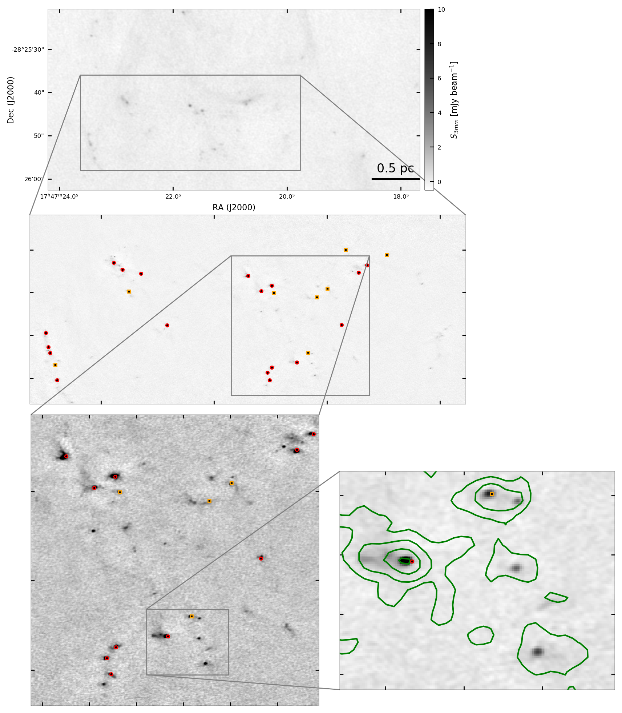
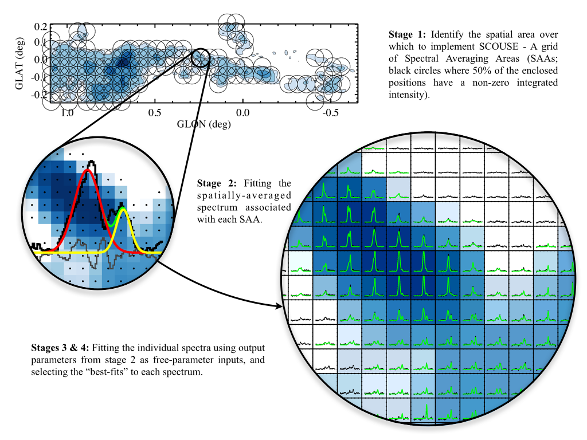
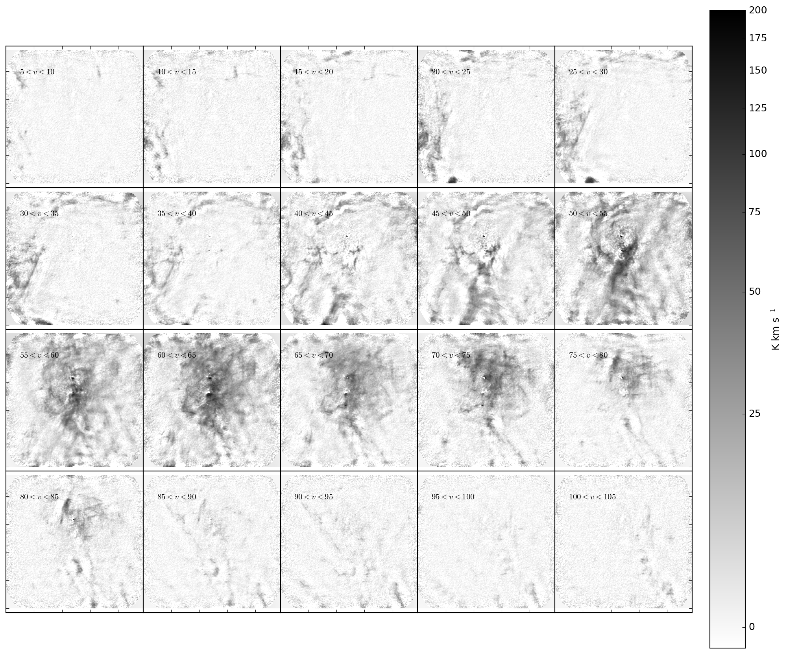
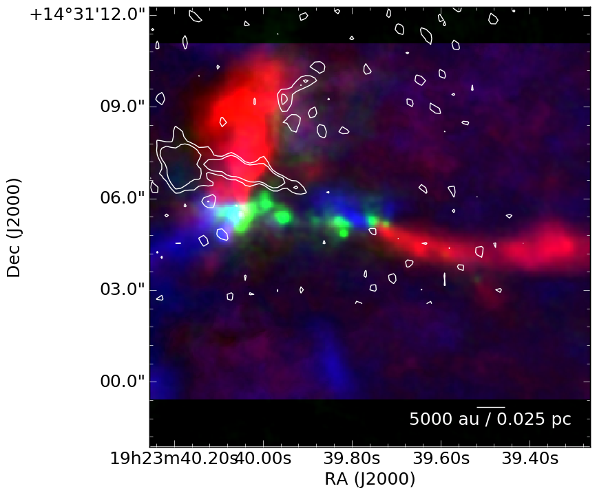
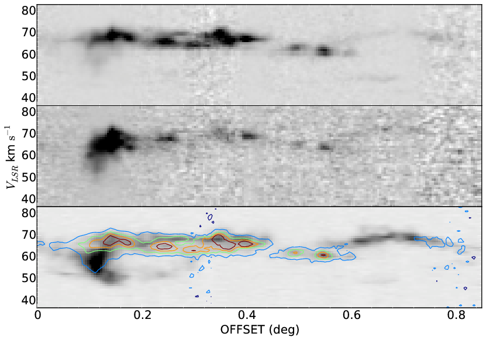

Future Projects
If you are interested in any of these projects, please feel free to contact me. The paragraph descriptions are ideas that could be done as summer
projects or expanded into 1+ year projects. I have several thesis-scale
projects too, such as "reduce and analyze the ALMA-IMF large program",
but I haven't gotten around to writing those up. Many of these have
been started, but not all!
Updated July 2026: The projects in the first section below are built
on data we already have in hand - or that are arriving right now - from our
JWST, ALMA (ACES and ALMA-IMF), and Roman programs. Each is designed to be
"bite-sized": there is a well-defined first deliverable reachable in a
semester or a summer, and each can grow into a masters thesis (or beyond).
Each project lists a suggested scope.
Software Development ProjectsI always have a wide range of software development projects available. If you're interested in working on astro-related tools and techniques, I will have something for you depending on your skill set and interests.Several project variants are always available:
|
New in 2026: Projects using JWST, ALMA, and Roman data in hand |
Find the young stars in JWST's view of Sgr B2Our JWST Cycle 3 program (GO 5365) imaged Sgr B2 - the most vigorously star-forming cloud in the Galactic Center - in 14 filters from 1.5 to 25 μm. The first-look paper (Budaiev+ 2026) revealed new candidate HII regions and deeply embedded massive stars, but the program's central goal - a complete catalog of young stellar objects - is still open. The project: perform crowded-field PSF photometry, classify sources with color-color and color-magnitude diagrams, and cross-match against our ALMA core catalog (Budaiev+ 2024) and the 499 water masers we mapped with the VLA (Budaiev+ 2025). The end goal is a measurement of the star formation rate of our Galaxy's most extreme cloud.Scope: undergrad - photometry and classification in one filter pair or one subregion; masters - the full YSO catalog and star formation rate. |
Cross-match the JWST and ALMA views of W51We have both exquisite JWST imaging (GO 6151; Yoo+ 2026, featured in a UF press release) and complete millimeter maps (ALMA-IMF, including the W51 core fragmentation study, Yoo+ 2025) of the W51 protocluster, one of the most massive star factories in the Galaxy. Which millimeter cores have infrared counterparts, and what does that tell us about their evolutionary states? This project cross-matches the JWST point source catalogs against the ALMA core and VLA source catalogs, measures which protostars are seen (or missed) at each wavelength, and builds the completeness corrections needed for the initial mass function measurement.Scope: undergrad - matched catalog and color analysis for one field (W51-E or W51-IRS2); masters - luminosity functions with completeness corrections from synthetic star tests. |
Map the ices of the Galactic Center with photometryIn The Colors of Ices, we showed that JWST photometry alone - no spectroscopy needed - can measure CO, H2O, and CO2 ice columns toward tens of thousands of stars, and we released the open-source icemodels package. The technique has so far been applied to The Brick and a 3-kpc-arm filament (Gramze+ 2025), but most JWST fields with the right filters - Sgr C, Cloud C, and the upcoming 143-hour JWST Galactic Center legacy survey (GO 10678) - remain unmapped. Ice maps constrain the cosmic ray ionization rate and even the metallicity of the Galactic Center.Scope: undergrad - ice column measurements for one cloud, or (for the software-inclined) extending icemodels with new laboratory ice constants and filter sets; masters - a CMZ-wide CO ice atlas. |
Mine the ACES data release: compact sources and MUBLO huntingThe ACES science-ready data were released in February 2026, covering the entire Central Molecular Zone at ~2" resolution in continuum (Ginsburg+ 2026) and >70 spectral lines. No comprehensive compact-source catalog exists yet. This project builds one from the 3 mm continuum mosaics (using, e.g., dendrocat or getsf), classifies the sources (dust cores vs. HII regions vs. something else), and then searches the spectrum of each source for anomalies - like the MUBLO, the mystery broad-line object we found in these data whose nature is still unknown. Are there more?Scope: undergrad - catalog one subfield and re-detect the MUBLO as validation; masters - the full-CMZ catalog and a systematic anomaly search. |
Where are the shocks in the CMZ? An ACES SiO catalogSiO traces shocked gas: protostellar outflows, cloud-cloud collisions, and material crashing into the CMZ from the dust lanes. The ACES SiO 2-1 cubes cover the whole CMZ, but no shock catalog has been extracted from them. This project catalogs the SiO-emitting structures, separates compact (outflow) from extended (collision) shocks, and compares the outflow population against the ~300 SiO outflows we cataloged in the Galactic disk with ALMA-IMF (Towner+ 2024): does the extreme CMZ environment change how protostars drive outflows?Scope: undergrad - one cloud (e.g., Sgr C or the 20 km/s cloud); masters - the CMZ-wide catalog with energetics. |
A census of HII regions in the CMZ with H40αThe ACES data include the H40α radio recombination line across the whole Central Molecular Zone. Recombination lines give clean, extinction-free measurements of ionized gas, so cataloging the H40α sources yields the ionizing photon budget of every HII region in the Galactic Center - and from that, the recent high-mass star formation rate. Comparison with VLA continuum catalogs of Sgr B2 and with the JWST-identified HII region candidates (Budaiev+ 2026) tests how many young HII regions the radio surveys missed.Scope: undergrad - a catalog with fluxes and inferred ionizing photon rates; masters - a complete CMZ star formation rate measurement. |
Put the CMZ's clouds in 3DThe 3D CMZ paper series (Battersby+ 2025) published near-side/far-side constraints for the Galactic Center clouds, and ACES provides uniform kinematics for all of them. Combining the two - cloud by cloud - tests the competing orbital models of the CMZ (open stream vs. closed ring) and determines where each cloud sits relative to Sgr A*. This is the modern, data-rich successor to our earlier H2CO absorption geometry work, and it connects directly to the question of why some CMZ clouds form stars and others don't.Scope: masters-level, though an undergrad can start with a single-cloud case study (e.g., the Brick or Sgr B2). |
Roman's first look at the Galactic Center: dust, gas, and starsOur approved Roman Cycle 1 program (19008) will measure the gas and dust in and in front of the Galactic Center using photometry from the Roman Galactic Plane Survey, whose first Galactic-plane imaging passes began in 2026. Roman delivers photometry of millions of stars toward the CMZ; from their reddening, we can build extinction maps at unprecedented resolution and test the ice-column predictions from our JWST Colors of Ices work at Roman's F213 band. Later survey passes add time-domain monitoring of the entire nuclear stellar disk. This project starts as data arrive, so a student can be among the first to work with Roman Galactic plane data.Scope: undergrad - validate Roman point-source photometry against existing catalogs (Spitzer, VVV, JWST) in one field; masters - an extinction map of the nuclear stellar disk and comparison with JWST ice measurements. |
Hot Core Line CatalogingWe have identified a lot of hot cores in Sgr B2, W51, ALMA-IMF, and throughout the Galaxy. Each of these cores contains many molecular species. We haven't cataloged them all yet! This project would involve using LTE modeling tools: either XCLASS, pyspeckit, or MADCUBA. For a few-month project, a student can just focus on measuring all the lines in 1-2 cores. |
Use ML to infer column densities from molecular lines in the CMZWe have maps of column density (i.e., the number of H2 molecules per cm2) at only poor (10-30") resolution in the Central Molecular Zone. The ACES project produced maps of molecular line intensity at about 2" resolution. Following Gratier+ 2021, can we train a machine-learning model on the low-resolution data (e.g., Jones+ 2012) to derive column density maps at high resolution? |
Line Radiative Transfer Modeling: What effect does turbulence have on observed lines?Much of what we know of the interstellar medium and of star formation derives from properties we measure using spectral line intensities and line ratios. The standard tools for interpreting lines and line ratios are local thermodynamic equilibrium (LTE) models and large velocity gradient (LVG) models. In both cases, the radiative excitation and transfer is simplified to a one-zone models that reduce the entire line of sight to a single assumed state. This assumption is wrong (e.g., Leroy+ 2017).To solve this, we will apply radiative transfer models using both LTE and LVG to individual cells in a simulation, but will then do ray-tracing radiative transfer through different viewing angles to see what the effects of varying optical depth and excitation are. This will be done using RADMC-3D, and the initial simulations used will be the CATS database. We will post-process these simulations to produce synthetic line emission maps, and we will analyze them as if the whole simulation box were a single zone. We will derive a mapping from the simulation physical conditions (linewidth, moments of the density, column density, and velocity fields, etc) to line ratios and determine whether they follow a trend that will allow inversion of line ratio to inferred physical properties. This work will also produce, as a side effect, synthetic image for other types of analysis. |
Archival Research: Catalog of "core" catalogsSeveral surveys of pre- and proto-stellar cores have been created, including dozens of local clouds using single-dish instruments and rapidly growing numbers of Galactic Disk clouds with ALMA. This project will be to assemble a table of these catalogs and determine whether they can be drawn from the same parent distribution, or not. If they cannot, that may indicate that the star formation process differs in these environments. If they can, the data hint at a universal star formation process. The key difficulty in this project is to determine how the catalogs are made and how much of the inevitable differences come from observational effects rather than physical effects. |
Core Catalog ComparisonLiterature catalogs of cores adopt different methods, with the most popular being getsf, dendrograms, and variants of derivative-based peak finders like gext2d and cutex. These cannot be fairly compared. Re-running these algorithms on public data will establish a library to enable fair comparison. |
What fraction of molecular outflows have SiO?We detect ~300 SiO outflows in ALMA-IMF. We haven't really cataloged CO outflows. I'd like to answer the question in the title, but we could ask the inverse too - what are the CO properties of SiO-emitting outflows? |
Salt mining in Chile's high desertWe found salt (NaCl and KCl) in the disks around Orion's Source I and another disk. Are there more salt detections waiting to be extracted from existing data in the ALMA archive? Each detection is likely to result in a dynamical mass measurement of the central source. Together, these detections might tell us more about the physical conditions that allow gas-phase salts to exist around protostars. |
Train Machine Learning algorithms to find stars in HII regionsStellar photometry on complex backgrounds - like HII regions and PDRs - is difficult. Commonly-used algorithms (e.g., those in photutils) fail because they are unable to distinguish substructure in the background from stars. However, it's easy to tell by eye which objects are stars and which are not, at least up to a point. That suggests that machine learning algorithms may be well-suited to solving this problem.This project would involve creating training sets and testing algorithms against those training sets. The training sets will come from a few samples of "pure background" images: radio continuum images of HII regions, simulations of HII regions and turbulent clouds, and far-infrared images of parts of the Galactic plane. We will add simulated stars to the image using realistic PSFs (e.g., for JWST - WebbPSF) to train the algorithm. After proving the tools on simulated data, we will apply them to real JWST data to obtain more complete catalogs of stars in HII regions. |
Measure the protostellar population in the W51 star forming region: Part IIHigh-mass star-cluster-forming regions are the most active areas of star formation in the Galaxy and may have been the dominant path for star formation in the early universe. The W51 protocluster region is one of the closest and most massive in our Galaxy. While the high-mass stars have been identified and measured with ALMA and VLA data, there are abundant lower-mass (but still possibly massive) stars in the surroundings that have only recently been discovered with very high resolution data. These objects need to be cataloged, characterized, and described. This detailed characterization will be used as the 'calibration' for our analysis of a large data set in the ALMA-IMF program. We will also look for binaries and attempt to characterize the binary distribution function at our ~300 AU resolution.Previously, as part of a student project, a cataloging tool was developed and applied to one set of ALMA images. For this project, we need to take these existing catalogs and cross-match them to measure a few key quantities, including the source multiplicity as a function of resolution and source temperature. This is a follow-up of another project completed by Connor McClellan (U. Florida). Summer Project Repository and associated software package 
|
Ongoing Projects (that were once advertised on this page)
Which lines trace what processes in the Galactic Center?UF Graduate Student Alyssa Bulatek is leading this project.There are a lot of molecular species that trace the entire "Central Molecular Zone" that are not seen in molecular clouds in the solar neighborhood. Some of these, like HNCO and SiO, are typically considered "shock tracers" when observed locally, but they are observed to be ubiquitous in the CMZ, so they're not useful for tracing high-velocity (protostellar jet, for example) material. I have a large ALMA program (not an ALMA large program...) to perform a full spectral line survey of one line of sight through the CMZ that includes diffuse gas, dense gas, molecular cores, and protostellar outflows, and our goal is to determine which molecular species, if any, uniquely trace one of these physical features. Data are being taken in Cycle 7 (Oct. 2019 - Sep. 2020); the Band 3, 4, and 6 components are mostly complete. |
Measure the protostellar population in Galactic Center cloud Sgr B2 DSUF Graduate Student Desmond Jeff is leading this project.How is star formation in the Galactic center different from the Galactic disk? We have a pretty good idea that it is (see, e.g., Longmore+ 2013 and references thereto), but why? Sgr B2 is the only richly star-forming cloud in the Galactic center, and I have been leading star-counting measurements of its ongoing star formation. In Ginsburg+ 2018, I discovered a large population of protostars that I asserted were all high-mass. About half of them are distributed along an elongated, possibly filamentary string in the "Deep South" subregion of the Sgr B2 molecular cloud. I obtained high-sensitivity and high-resolution data at 1 mm to measure these sources more accurately and search for their purported low-mass counterparts. The data are extremely rich, so there are several projects here:
 |
Measure the Kinematic Structure of Sgr B2, the most massive cloud in our galaxyUF Undergraduate Madeline Hall worked on this project. It is now being done by a large group as part of the ACES large program, led by Jonny Henshaw, including Anika Schmiedeke, Adam Fairley, and Dylan Pare. Molecular clouds are the regions in which stars form, and they are turbulent. This project aims to measure the kinematic structure (the velocity of difference gas blobs) of the most massive cloud in our Galaxy. The student will use the SCOUSE software to fit spectral profiles to millions of spectra semi-automatically. Because SCOUSE is new and experimental software, this project will involve some software debugging and development. The end result should be an essential measurement of the velocity field and turbulent statistics in a very massive cloud, which will serve as the key measurement in a paper testing theoretical models of star formation. This project will be done in collaboration with Jonny Henshaw, who developed SCOUSE.  |
Ammonia masers in W51UF Undergraduate Derod Deal is working on this project.Ammonia masers are a very rare astronomical phenomenon. They have been detected toward only a handful of sources, including W51 IRS2, in which there are dozens of different masing transitions. I have obtained new high spatial resolution (0.04-0.1 arcsecond, 200-500 AU) data with the VLA with the goal of determining exactly where these masers come from and which source(s) drive them. This project will involve comparison between the VLA data and similar high-resolution data sets from ALMA. |
Radio Continuum Imaging & Measurement for the ALMA-IMF projectIn collaboration with Roberto Galvan-MadridThe ALMA-IMF program is a large project to survey to image high-mass star forming regions and count the number of forming new stars of each mass. This measurement of the proto-initial-mass-function (proto-IMF, sometimes core mass function, CMF) is one of the two key ingredients of star formation theory, and if we find environmental variation, it will have profound impact on application of these models in the context of both simulations and extragalactic observations. This sub-project is to measure the "free-free contamination" in our millimeter continuum observations to help get accurate masses toward the highest-mass stars. It will involve imaging radio continuum data from the JVLA, and maybe poking at those same data sets to look for some interesting lines. |
Completed Projects
NRAO REU projects for Summer 2018
Implement a CASA region parser in astropyCompleted by GSoC student Sushobhana Patra. CRTF DocumentationCASA is the main data reduction package for ALMA and VLA data. Regions on the sky such as ellipses, circles, and boxes can be specified in a few different formats. CASA has a region format that is currently supported only by CASA itself, but it will be helpful for researchers to be able to translate these regions to other formats. Astropy is a general-use library for astronomy written in python, and it includes a package for handling sky regions. The student will write a CASA region parser for the astropy regions project. They will gain familiarity both with CASA and astropy. Some experience with python or similar scripted languages is required. This is primarily a software development project and therefore may be of interest to a broader range of students. |
Measure the protostellar population in the W51 star forming regionCompleted by Connor McClellan (U. Florida). Summer Project Repository and associated software packageHigh-mass star-cluster-forming regions are the most active areas of star formation in the Galaxy and may have been the dominant path for star formation in the early universe. The W51 protocluster region is one of the closest and most massive in our Galaxy. While the high-mass stars have been identified and measured with ALMA and VLA data, there are abundant lower-mass (but still possibly massive) stars in the surroundings that have only recently been discovered with very high resolution data. These objects need to be cataloged, characterized, and described. The student will examine VLA and ALMA images with resolution ~0.05" and look at source spectra to determine the protostars' luminosities and, ideally, masses. The student will learn to use astropy tools for source finding, Gaussian fitting, and spectroscopic analysis. |
Protostars in Orion: Spectral Energy Distributions and proper motionsCompleted by Justin Otter (Haverford College). Summer research repositoryPublished in ApJ: Small Protoplanetary Disks in the Orion Nebula Cluster and OMC1 with ALMA The Orion nebula is adjacent to the closest high-mass star-forming region in the Galaxy. New ALMA data have revealed several new sources in this region that are likely to be protostars. We would like to measure their positions and luminosities and determine what sorts of protostars they are. Learning about these stars and their motions will tell us what the gravitational potential of the Orion cluster looks like and will be important for determining how high-mass stars have formed there. The student will examine VLA and ALMA images with resolution ~0.05" and look at source spectra to determine the protostars' luminosities and, ideally, masses. The student will learn to use astropy tools for source finding, Gaussian fitting, and spectroscopic analysis. The student will also have opportunities to look at the VLA archive and attempt to reduce archival data if they have the time and ambition. |
NRAO REU projects for Summer 2017
Determine how much mass is ejected in a high-mass outflowCompleted by Terry Melo (Agnes Scott College). Presented at AASGoal: Measure the CO/H ratio across a symmetric high-mass outflow. Provide a fundamental calibration for outflow mass-loading rates. One of the fundamental problems affecting observations of molecular gas is that we don't know precisely how much of each molecule there is relative to the total amount of mass (or the total amount of hydrogen, since it's mostly hydrogen). This outflow, known as the "Lacy Jet" for its discoverer, is unique in that it is (almost) perfectly symmetric, but one half is molecular and the other half is ionized. Because we can measure the hydrogen mass directly in an ionized medium, we should be able to measure the CO abundance directly in this outflow. The project should involve a relatively straightforward measurement followed by an examination of the possible confusing effects that might impact the measurement. The student will learn about molecular abundances and protostellar outflows. They will be trained to use interpolation and reprojection algorithms to match datasets on different grids. The project is based on data from ALMA, the VLA, and the IRTF. |
|
 |
|
|
Geometry of Molecular Clouds in the CMZPart of Natalie Butterfield's PhD thesis (U. Iowa)Goal: Determine the geometry of the clouds using the method demonstrated in Ginsburg+ 2015 (fig 9) and figure out how far the clouds are from the central black hole. While improved models of the CMZ's geometry have recently been developed (1,2), we still know little about where exactly the clouds are relative to the central black hole and one another. This geometric information is crucial for understanding the physical properties and evolutionary sequence of clouds in the CMZ. The basic method is to compare H2CO absorption with 13CO emission in position-velocity cubes over regions where we know that HII regions are present in the CMZ along the line of sight. By comparing the emission and absorption, we can determine which clouds are in the foreground or background of the HII regions and therefore where along the "CMZ Ring" they lay. This project will use ATCA, GBT, and VLA data sets that are already reduced. The analysis will be primarily visual, using ds9 and glue to compare the images. The student will learn these visualization tools and the details of the CMZ's layout.  |
|
|